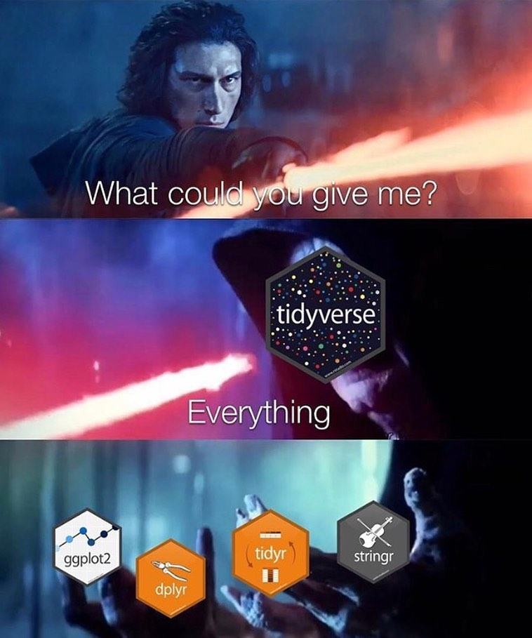
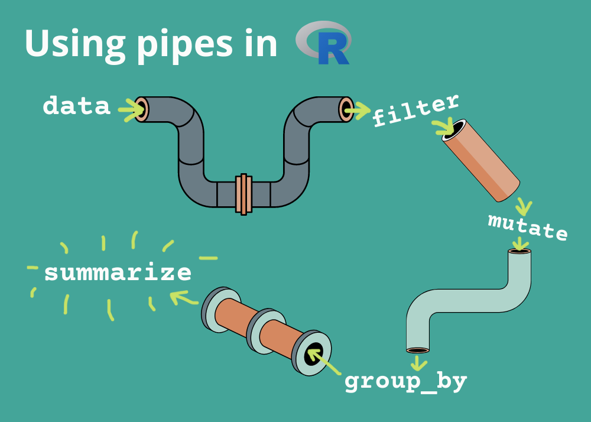

Estruturas e Manipulação de Dados Parte 3
Curso:
Introdução à manejo, visualização e análise de dados com R
8 de janeiro de 2026
Manipulação de dados
Pacotes
O R apresenta pacotes, que são um conjunto de funções.
Existem pacotes para diversos tipos de funcionalidades e uso
A função do pacote é providenciar um conjunto de funções, assim você não precisa escrever elas.
Dentre esses pacotes o mais famoso é o
tidyverse:um pacote com a função de instalar e carregar outros pacotes
pacotes para manipulação de dados, voltado para Ciência de Dados
É considerado um “universo” à parte do R, pois todas as suas ferramentas possuem formas de uso consistentes e funcionam muito bem em conjunto
Manipulação de dados

Manipulação de dados
Pacotes
Instalação de pacotes
- só é necessário instalar uma única vez
Manipulação de dados
Pacotes
Instalação de pacotes
- só é necessário instalar uma única vez
Carregar pacotes
Primeira coisa a se fazer quando começar um script
Necessário carregar toda vez que abrir um script
── Attaching core tidyverse packages ──────────────────────── tidyverse 2.0.0 ──
✔ dplyr 1.1.4 ✔ readr 2.1.6
✔ forcats 1.0.1 ✔ stringr 1.6.0
✔ ggplot2 4.0.1 ✔ tibble 3.3.0
✔ lubridate 1.9.4 ✔ tidyr 1.3.2
✔ purrr 1.2.0
── Conflicts ────────────────────────────────────────── tidyverse_conflicts() ──
✖ dplyr::filter() masks stats::filter()
✖ dplyr::lag() masks stats::lag()
ℹ Use the conflicted package (<http://conflicted.r-lib.org/>) to force all conflicts to become errorsManipulação de dados
Pacotes
Instalação de pacotes
- só é necessário instalar uma única vez
Carregar pacotes
Primeira coisa a se fazer quando começar um script
Necessário carregar toda vez que abrir um script
Manipulação de dados
pacote magrittr
Uso do operador pipe (%>%) (2014)
Criou o famoso pipe =
%>%Serve para passar o resultado de uma função direto para a próxima, sem precisar criar vários objetos intermediários.
A lógica é usar funções para irem sendo precessadas em sequência de prioridade
- “pegue isso → faça isso → depois isso”
O pipe coloca o objeto como primeiro argumento da função seguinte.
Manipulação de dados
pacote magrittr
Uso do operador pipe (%>%) (2014)
Criou o famoso pipe =
%>%Serve para passar o resultado de uma função direto para a próxima, sem precisar criar vários objetos intermediários.
A lógica é usar funções para irem sendo precessadas em sequência de prioridade
- “pegue isso → faça isso → depois isso”
O pipe coloca o objeto como primeiro argumento da função seguinte.
Analogia:
produção de uma bebida
Manipulação de dados
pacote magrittr
Uso do operador pipe (%>%) (2014)
Criou o famoso pipe =
%>%Serve para passar o resultado de uma função direto para a próxima, sem precisar criar vários objetos intermediários.
A lógica é usar funções para irem sendo precessadas em sequência de prioridade
- “pegue isso → faça isso → depois isso”
O pipe coloca o objeto como primeiro argumento da função seguinte.
Analogia:
produção de uma bebida- Água é o input/entrada, os equipamentos/processos seguintes são funções e são seguidos por um
%>%(pipe)
- Água é o input/entrada, os equipamentos/processos seguintes são funções e são seguidos por um
Manipulação de dados
pacote magrittr
Uso do operador pipe (%>%) (2014)
Criou o famoso pipe =
%>%Serve para passar o resultado de uma função direto para a próxima, sem precisar criar vários objetos intermediários.
A lógica é usar funções para irem sendo precessadas em sequência de prioridade
- “pegue isso → faça isso → depois isso”
O pipe coloca o objeto como primeiro argumento da função seguinte.
Analogia:
produção de uma bebidaÁgua é o input/entrada, os equipamentos/processos seguintes são funções e são seguidos por um
%>%(pipe)O efeito acaba na ultima função a qual não tem mais nenhum
%>%associado
Manipulação de dados
pacote magrittr
Uso do operador pipe (%>%) (2014)
Criou o famoso pipe =
%>%Serve para passar o resultado de uma função direto para a próxima, sem precisar criar vários objetos intermediários.
A lógica é usar funções para irem sendo precessadas em sequência de prioridade
- “pegue isso → faça isso → depois isso”
O pipe coloca o objeto como primeiro argumento da função seguinte.
Analogia:
produção de uma bebidaÁgua é o input/entrada, os equipamentos/processos seguintes são funções e são seguidos por um
%>%(pipe)O efeito acaba na ultima função a qual não tem mais nenhum
%>%associadoO que restá é o
output/resultado, a bebida pronta após todos os processos.
Manipulação de dados
magrittr
Uso do operador pipe (%>%) (2014)

Manipulação de dados
pacote magrittr
Uso do operador pipe (%>%) (2014)
# A tibble: 172 × 18
Id_plot Location Plots Treatment Date Longitude Latitude Elevation Richness
<chr> <chr> <dbl> <chr> <dbl> <dbl> <dbl> <dbl> <dbl>
1 CBO_p06o CBO 6 open 2019 -48.0 -24.1 807. 11
2 CBO_p09o CBO 9 open 2019 -48.0 -24.1 727. 9
3 CBO_p09c CBO 9 closed 2017 -48.0 -24.1 728. 9
4 CBO_p04c CBO 4 closed 2019 -48.0 -24.1 824. 6
5 CBO_p05c CBO 5 closed 2019 -48.0 -24.1 771. 5
6 CBO_p11o CBO 11 open 2019 -48.0 -24.1 804. 8
7 CAR_p12o CAR 12 open 2019 -47.9 -25.1 137. 9
8 ITA_p06o ITA 6 open 2019 -45.1 -23.3 1010. 6
9 ITA_p15o ITA 15 open 2019 -45.1 -23.3 1079. 2
10 VGM_p07c VGM 7 closed 2019 -45.2 -23.4 787. 8
# ℹ 162 more rows
# ℹ 9 more variables: Abundance <dbl>, D_Shannon <dbl>, D_Simpson <dbl>,
# Canopy_cover <dbl>, N_M_Trees_adult <dbl>, N_M_Eedulis_adult <dbl>,
# effort_cam_day_summed <dbl>, med_lar_mamm_spp_rich <dbl>,
# hbvr_body_size_kg <dbl>Manipulação de dados
pacote magrittr
Uso do operador pipe (%>%) (2014)
Manipulação de dados
magrittr
Uso do operador pipe (%>%) (2014)
Manipulação de dados
magrittr
Uso do operador pipe (%>%) (2014)
Manipulação de dados
magrittr
Uso do operador pipe (%>%) (2014)
dados.csv <- readr::read_csv("../01_dados/biota_diversidade.csv")
dados.tidy <- dados.csv %>% #seleciona o objeto
dplyr::select(c(2,3,4)) %>% #seleciona as colunas de interesse
table() #vamos checar número de elementos repetidos
dados.tidy , , Treatment = closed
Plots
Location 1 2 3 4 5 6 7 8 9 10 11 12 14 15
CAR 2 2 2 2 2 0 0 2 2 2 2 2 2 2
CBO 2 2 0 2 2 2 0 0 2 0 2 2 2 2
ITA 2 2 0 2 0 2 0 2 0 2 0 2 2 2
VGM 2 0 0 2 2 2 2 2 2 2 2 2 2 2
, , Treatment = open
Plots
Location 1 2 3 4 5 6 7 8 9 10 11 12 14 15
CAR 2 2 2 2 2 0 0 2 2 2 2 2 2 2
CBO 2 2 0 2 2 2 0 0 2 0 2 2 2 2
ITA 2 2 0 2 0 2 0 2 0 2 0 2 2 2
VGM 2 0 0 2 2 2 2 2 2 2 2 2 2 2Manipulação de dados
Carregar dados
readr Leitura de dados
- Funções para
importar dadosde diferentes formatos - Parte do tidyverse, mais rápido que funções base do R
- Identifica automaticamente os tipos de dados
- Usar
read_csv2()eread_table2()se os dados estiverem em PT-BR
Arquivo separado por vírgula
# Arquivo separado por vírgula
dados_csv <- readr::read_csv("../01_dados/biota_diversidade.csv")
dados_csv# A tibble: 172 × 18
Id_plot Location Plots Treatment Date Longitude Latitude Elevation Richness
<chr> <chr> <dbl> <chr> <dbl> <dbl> <dbl> <dbl> <dbl>
1 CBO_p06o CBO 6 open 2019 -48.0 -24.1 807. 11
2 CBO_p09o CBO 9 open 2019 -48.0 -24.1 727. 9
3 CBO_p09c CBO 9 closed 2017 -48.0 -24.1 728. 9
4 CBO_p04c CBO 4 closed 2019 -48.0 -24.1 824. 6
5 CBO_p05c CBO 5 closed 2019 -48.0 -24.1 771. 5
6 CBO_p11o CBO 11 open 2019 -48.0 -24.1 804. 8
7 CAR_p12o CAR 12 open 2019 -47.9 -25.1 137. 9
8 ITA_p06o ITA 6 open 2019 -45.1 -23.3 1010. 6
9 ITA_p15o ITA 15 open 2019 -45.1 -23.3 1079. 2
10 VGM_p07c VGM 7 closed 2019 -45.2 -23.4 787. 8
# ℹ 162 more rows
# ℹ 9 more variables: Abundance <dbl>, D_Shannon <dbl>, D_Simpson <dbl>,
# Canopy_cover <dbl>, N_M_Trees_adult <dbl>, N_M_Eedulis_adult <dbl>,
# effort_cam_day_summed <dbl>, med_lar_mamm_spp_rich <dbl>,
# hbvr_body_size_kg <dbl>Manipulação de dados
Carregar dados
readr Leitura de dados
- Funções para
importar dadosde diferentes formatos - Parte do tidyverse, mais rápido que funções base do R
- Identifica automaticamente os tipos de dados
- Usar
read_csv2()eread_table2()se os dados estiverem em PT-BR
Arquivo separado por vírgula
# Arquivo separado por vírgula
dados_csv <- readr::read_csv("../01_dados/biota_diversidade.csv")
dados_csv# A tibble: 172 × 18
Id_plot Location Plots Treatment Date Longitude Latitude Elevation Richness
<chr> <chr> <dbl> <chr> <dbl> <dbl> <dbl> <dbl> <dbl>
1 CBO_p06o CBO 6 open 2019 -48.0 -24.1 807. 11
2 CBO_p09o CBO 9 open 2019 -48.0 -24.1 727. 9
3 CBO_p09c CBO 9 closed 2017 -48.0 -24.1 728. 9
4 CBO_p04c CBO 4 closed 2019 -48.0 -24.1 824. 6
5 CBO_p05c CBO 5 closed 2019 -48.0 -24.1 771. 5
6 CBO_p11o CBO 11 open 2019 -48.0 -24.1 804. 8
7 CAR_p12o CAR 12 open 2019 -47.9 -25.1 137. 9
8 ITA_p06o ITA 6 open 2019 -45.1 -23.3 1010. 6
9 ITA_p15o ITA 15 open 2019 -45.1 -23.3 1079. 2
10 VGM_p07c VGM 7 closed 2019 -45.2 -23.4 787. 8
# ℹ 162 more rows
# ℹ 9 more variables: Abundance <dbl>, D_Shannon <dbl>, D_Simpson <dbl>,
# Canopy_cover <dbl>, N_M_Trees_adult <dbl>, N_M_Eedulis_adult <dbl>,
# effort_cam_day_summed <dbl>, med_lar_mamm_spp_rich <dbl>,
# hbvr_body_size_kg <dbl>Arquivo separado por tabulação
# Arquivo separado por tabulação
dados_txt <- readr::read_table("../01_dados/biota_diversidade.txt")
dados_txt# A tibble: 172 × 18
Id_plot Location Plots Treatment Date Longitude Latitude Elevation Richness
<chr> <chr> <dbl> <chr> <dbl> <dbl> <dbl> <dbl> <dbl>
1 CBO_p06o CBO 6 open 2019 -48.0 -24.1 807. 11
2 CBO_p09o CBO 9 open 2019 -48.0 -24.1 727. 9
3 CBO_p09c CBO 9 closed 2017 -48.0 -24.1 728. 9
4 CBO_p04c CBO 4 closed 2019 -48.0 -24.1 824. 6
5 CBO_p05c CBO 5 closed 2019 -48.0 -24.1 771. 5
6 CBO_p11o CBO 11 open 2019 -48.0 -24.1 804. 8
7 CAR_p12o CAR 12 open 2019 -47.9 -25.1 137. 9
8 ITA_p06o ITA 6 open 2019 -45.1 -23.3 1010. 6
9 ITA_p15o ITA 15 open 2019 -45.1 -23.3 1079. 2
10 VGM_p07c VGM 7 closed 2019 -45.2 -23.4 787. 8
# ℹ 162 more rows
# ℹ 9 more variables: Abundance <dbl>, D_Shannon <dbl>, D_Simpson <dbl>,
# Canopy_cover <dbl>, N_M_Trees_adult <dbl>, N_M_Eedulis_adult <dbl>,
# effort_cam_day_summed <dbl>, med_lar_mamm_spp_rich <dbl>,
# hbvr_body_size_kg <dbl>Manipulação de dados
Checar estrutura dos dados
glimpse() visão compacta dos dados
- Mostra modo de cada coluna, dimensões e primeiras observações
- Alternativa mais compacta que
str()
Rows: 172
Columns: 18
$ Id_plot <chr> "CBO_p06o", "CBO_p09o", "CBO_p09c", "CBO_p04c", …
$ Location <chr> "CBO", "CBO", "CBO", "CBO", "CBO", "CBO", "CAR",…
$ Plots <dbl> 6, 9, 9, 4, 5, 11, 12, 6, 15, 7, 1, 11, 12, 14, …
$ Treatment <chr> "open", "open", "closed", "closed", "closed", "o…
$ Date <dbl> 2019, 2019, 2017, 2019, 2019, 2019, 2019, 2019, …
$ Longitude <dbl> -47.98784, -47.98609, -47.98620, -47.99039, -47.…
$ Latitude <dbl> -24.06410, -24.07105, -24.07101, -24.06630, -24.…
$ Elevation <dbl> 807.0578, 727.4435, 727.9145, 823.6266, 771.0035…
$ Richness <dbl> 11, 9, 9, 6, 5, 8, 9, 6, 2, 8, 9, 9, 6, 6, 7, 8,…
$ Abundance <dbl> 55, 23, 38, 26, 48, 50, 32, 25, 15, 51, 64, 51, …
$ D_Shannon <dbl> 2.1831873, 1.9172155, 2.0097092, 1.6769878, 1.41…
$ D_Simpson <dbl> 0.8580247, 0.8150000, 0.8359375, 0.7901235, 0.72…
$ Canopy_cover <dbl> 70.09, 69.88, NA, 67.88, 72.43, 64.40, 66.59, 79…
$ N_M_Trees_adult <dbl> 23, 20, 22, 29, 17, 21, 21, 28, 18, 22, 20, 21, …
$ N_M_Eedulis_adult <dbl> 0, 0, 1, 0, 0, 1, 2, 11, 3, 7, 0, 1, 0, 3, 0, 10…
$ effort_cam_day_summed <dbl> 91, 170, 78, 119, 179, 174, 109, 204, 214, 151, …
$ med_lar_mamm_spp_rich <dbl> 0, 4, 0, 0, 0, 5, 1, 1, 6, 0, 1, 1, 2, 3, 2, 2, …
$ hbvr_body_size_kg <dbl> 0.00000, 220.00000, 0.00000, 0.00000, 0.00000, 1…Manipulação de dados
Seleção de Colunas
select() Selecionar colunas específicas
Por nome
# A tibble: 172 × 3
Id_plot Location Plots
<chr> <chr> <dbl>
1 CBO_p06o CBO 6
2 CBO_p09o CBO 9
3 CBO_p09c CBO 9
4 CBO_p04c CBO 4
5 CBO_p05c CBO 5
6 CBO_p11o CBO 11
7 CAR_p12o CAR 12
8 ITA_p06o ITA 6
9 ITA_p15o ITA 15
10 VGM_p07c VGM 7
# ℹ 162 more rowsManipulação de dados
Seleção de Colunas
select() Selecionar colunas específicas
Por nome
# A tibble: 172 × 3
Id_plot Location Plots
<chr> <chr> <dbl>
1 CBO_p06o CBO 6
2 CBO_p09o CBO 9
3 CBO_p09c CBO 9
4 CBO_p04c CBO 4
5 CBO_p05c CBO 5
6 CBO_p11o CBO 11
7 CAR_p12o CAR 12
8 ITA_p06o ITA 6
9 ITA_p15o ITA 15
10 VGM_p07c VGM 7
# ℹ 162 more rowsPor posição
Manipulação de dados
Seleção de Colunas
select(-c()) remover colunas específicas
Por nome
# A tibble: 172 × 15
Treatment Date Longitude Latitude Elevation Richness Abundance D_Shannon
<chr> <dbl> <dbl> <dbl> <dbl> <dbl> <dbl> <dbl>
1 open 2019 -48.0 -24.1 807. 11 55 2.18
2 open 2019 -48.0 -24.1 727. 9 23 1.92
3 closed 2017 -48.0 -24.1 728. 9 38 2.01
4 closed 2019 -48.0 -24.1 824. 6 26 1.68
5 closed 2019 -48.0 -24.1 771. 5 48 1.42
6 open 2019 -48.0 -24.1 804. 8 50 1.65
7 open 2019 -47.9 -25.1 137. 9 32 1.61
8 open 2019 -45.1 -23.3 1010. 6 25 1.67
9 open 2019 -45.1 -23.3 1079. 2 15 0.693
10 closed 2019 -45.2 -23.4 787. 8 51 1.75
# ℹ 162 more rows
# ℹ 7 more variables: D_Simpson <dbl>, Canopy_cover <dbl>,
# N_M_Trees_adult <dbl>, N_M_Eedulis_adult <dbl>,
# effort_cam_day_summed <dbl>, med_lar_mamm_spp_rich <dbl>,
# hbvr_body_size_kg <dbl>Manipulação de dados
Seleção de Colunas
select(-c()) remover colunas específicas
Por nome
# A tibble: 172 × 15
Treatment Date Longitude Latitude Elevation Richness Abundance D_Shannon
<chr> <dbl> <dbl> <dbl> <dbl> <dbl> <dbl> <dbl>
1 open 2019 -48.0 -24.1 807. 11 55 2.18
2 open 2019 -48.0 -24.1 727. 9 23 1.92
3 closed 2017 -48.0 -24.1 728. 9 38 2.01
4 closed 2019 -48.0 -24.1 824. 6 26 1.68
5 closed 2019 -48.0 -24.1 771. 5 48 1.42
6 open 2019 -48.0 -24.1 804. 8 50 1.65
7 open 2019 -47.9 -25.1 137. 9 32 1.61
8 open 2019 -45.1 -23.3 1010. 6 25 1.67
9 open 2019 -45.1 -23.3 1079. 2 15 0.693
10 closed 2019 -45.2 -23.4 787. 8 51 1.75
# ℹ 162 more rows
# ℹ 7 more variables: D_Simpson <dbl>, Canopy_cover <dbl>,
# N_M_Trees_adult <dbl>, N_M_Eedulis_adult <dbl>,
# effort_cam_day_summed <dbl>, med_lar_mamm_spp_rich <dbl>,
# hbvr_body_size_kg <dbl>Por posição
# A tibble: 172 × 15
Treatment Date Longitude Latitude Elevation Richness Abundance D_Shannon
<chr> <dbl> <dbl> <dbl> <dbl> <dbl> <dbl> <dbl>
1 open 2019 -48.0 -24.1 807. 11 55 2.18
2 open 2019 -48.0 -24.1 727. 9 23 1.92
3 closed 2017 -48.0 -24.1 728. 9 38 2.01
4 closed 2019 -48.0 -24.1 824. 6 26 1.68
5 closed 2019 -48.0 -24.1 771. 5 48 1.42
6 open 2019 -48.0 -24.1 804. 8 50 1.65
7 open 2019 -47.9 -25.1 137. 9 32 1.61
8 open 2019 -45.1 -23.3 1010. 6 25 1.67
9 open 2019 -45.1 -23.3 1079. 2 15 0.693
10 closed 2019 -45.2 -23.4 787. 8 51 1.75
# ℹ 162 more rows
# ℹ 7 more variables: D_Simpson <dbl>, Canopy_cover <dbl>,
# N_M_Trees_adult <dbl>, N_M_Eedulis_adult <dbl>,
# effort_cam_day_summed <dbl>, med_lar_mamm_spp_rich <dbl>,
# hbvr_body_size_kg <dbl>Manipulação de dados
Seleção de Colunas
select() funções auxiliares - Seleção por padrões
Manipulação de dados
Seleção de Colunas
select() funções auxiliares - Seleção por padrões
Colunas que começam com determinado texto
Colunas que terminam com determinado texto
# A tibble: 172 × 4
Location Elevation D_Shannon D_Simpson
<chr> <dbl> <dbl> <dbl>
1 CBO 807. 2.18 0.858
2 CBO 727. 1.92 0.815
3 CBO 728. 2.01 0.836
4 CBO 824. 1.68 0.790
5 CBO 771. 1.42 0.72
6 CBO 804. 1.65 0.757
7 CAR 137. 1.61 0.67
8 ITA 1010. 1.67 0.793
9 ITA 1079. 0.693 0.5
10 VGM 787. 1.75 0.779
# ℹ 162 more rowsManipulação de dados
Seleção de Colunas
everything() Reordenar colunas
everything()seleciona todas as outras colunas restantes
# A tibble: 172 × 18
Treatment Id_plot Location Plots Date Longitude Latitude Elevation Richness
<chr> <chr> <chr> <dbl> <dbl> <dbl> <dbl> <dbl> <dbl>
1 open CBO_p06o CBO 6 2019 -48.0 -24.1 807. 11
2 open CBO_p09o CBO 9 2019 -48.0 -24.1 727. 9
3 closed CBO_p09c CBO 9 2017 -48.0 -24.1 728. 9
4 closed CBO_p04c CBO 4 2019 -48.0 -24.1 824. 6
5 closed CBO_p05c CBO 5 2019 -48.0 -24.1 771. 5
6 open CBO_p11o CBO 11 2019 -48.0 -24.1 804. 8
7 open CAR_p12o CAR 12 2019 -47.9 -25.1 137. 9
8 open ITA_p06o ITA 6 2019 -45.1 -23.3 1010. 6
9 open ITA_p15o ITA 15 2019 -45.1 -23.3 1079. 2
10 closed VGM_p07c VGM 7 2019 -45.2 -23.4 787. 8
# ℹ 162 more rows
# ℹ 9 more variables: Abundance <dbl>, D_Shannon <dbl>, D_Simpson <dbl>,
# Canopy_cover <dbl>, N_M_Trees_adult <dbl>, N_M_Eedulis_adult <dbl>,
# effort_cam_day_summed <dbl>, med_lar_mamm_spp_rich <dbl>,
# hbvr_body_size_kg <dbl>Manipulação de dados
Filtragem de Linhas
filter()
Filtragem de Linhas
filter()
Filtragem de Linhas
filter()
Filtragem de Linhas
filter()
Filtragem de Linhas
slice()
Filtragem de Linhas
slice_sample()
Filtragem de Linhas
distinct()
Manipulação de dados
Edição de Colunas
rename()Renomear colunas
- Formato: novo_nome = nome_antigo
dados_csv %>%
dplyr::rename(Tratamento = Treatment,
Local = Location,
Parcelas = Plots,
ID = Id_plot)# A tibble: 172 × 18
ID Local Parcelas Tratamento Date Longitude Latitude Elevation Richness
<chr> <chr> <dbl> <chr> <dbl> <dbl> <dbl> <dbl> <dbl>
1 CBO_p0… CBO 6 open 2019 -48.0 -24.1 807. 11
2 CBO_p0… CBO 9 open 2019 -48.0 -24.1 727. 9
3 CBO_p0… CBO 9 closed 2017 -48.0 -24.1 728. 9
4 CBO_p0… CBO 4 closed 2019 -48.0 -24.1 824. 6
5 CBO_p0… CBO 5 closed 2019 -48.0 -24.1 771. 5
6 CBO_p1… CBO 11 open 2019 -48.0 -24.1 804. 8
7 CAR_p1… CAR 12 open 2019 -47.9 -25.1 137. 9
8 ITA_p0… ITA 6 open 2019 -45.1 -23.3 1010. 6
9 ITA_p1… ITA 15 open 2019 -45.1 -23.3 1079. 2
10 VGM_p0… VGM 7 closed 2019 -45.2 -23.4 787. 8
# ℹ 162 more rows
# ℹ 9 more variables: Abundance <dbl>, D_Shannon <dbl>, D_Simpson <dbl>,
# Canopy_cover <dbl>, N_M_Trees_adult <dbl>, N_M_Eedulis_adult <dbl>,
# effort_cam_day_summed <dbl>, med_lar_mamm_spp_rich <dbl>,
# hbvr_body_size_kg <dbl>Manipulação de dados
Edição de Colunas
column_to_rownames pega uma coluna existente e transforma essa coluna em nomes de linha
Manipulação de dados
Edição de Colunas
column_to_rownames pega uma coluna existente e transforma essa coluna em nomes de linha
Super importante quando precisar deixar a estrutura da tabela para análises (matrix para PCA,, RDA, NMDS)
dados_csv_col_n <- dados_csv %>%
dplyr::filter(Date == 2019) %>%
tibble::column_to_rownames("Id_plot") # seleciona a coluna existente
dados_csv_col_n Location Plots Treatment Date Longitude Latitude Elevation Richness
CBO_p06o CBO 6 open 2019 -47.98784 -24.06410 807.05780 11
CBO_p09o CBO 9 open 2019 -47.98609 -24.07105 727.44348 9
CBO_p04c CBO 4 closed 2019 -47.99039 -24.06630 823.62665 6
CBO_p05c CBO 5 closed 2019 -47.98947 -24.06563 771.00354 5
CBO_p11o CBO 11 open 2019 -47.98570 -24.06291 804.26862 8
CAR_p12o CAR 12 open 2019 -47.93181 -25.10785 136.64462 9
ITA_p06o ITA 6 open 2019 -45.08730 -23.31726 1010.29000 6
ITA_p15o ITA 15 open 2019 -45.07243 -23.31044 1078.85000 2
VGM_p07c VGM 7 closed 2019 -45.22362 -23.43431 786.74316 8
CBO_p01c CBO 1 closed 2019 -47.99359 -24.06701 730.71277 12
CBO_p06c CBO 6 closed 2019 -47.98778 -24.06406 805.88934 7
CBO_p12c CBO 12 closed 2019 -47.98604 -24.06442 747.12707 6
CBO_p14o CBO 14 open 2019 -47.98390 -24.06217 745.25897 4
CBO_p15o CBO 15 open 2019 -47.98211 -24.06130 747.09564 4
CBO_p15c CBO 15 closed 2019 -47.98242 -24.06155 745.31445 8
CAR_p12c CAR 12 closed 2019 -47.93181 -25.10781 136.43825 5
CAR_p14c CAR 14 closed 2019 -47.92906 -25.10611 184.36289 11
ITA_p10o ITA 10 open 2019 -45.08239 -23.31430 1068.85000 3
ITA_p12o ITA 12 open 2019 -45.07941 -23.31129 1088.23000 3
ITA_p14o ITA 14 open 2019 -45.07499 -23.31049 1066.75000 3
VGM_p06o VGM 6 open 2019 -45.22646 -23.43421 777.63953 7
VGM_p06c VGM 6 closed 2019 -45.22640 -23.43428 778.06317 11
VGM_p08o VGM 8 open 2019 -45.22087 -23.43481 796.22095 11
VGM_p08c VGM 8 closed 2019 -45.22082 -23.43486 797.13892 10
VGM_p10o VGM 10 open 2019 -45.21686 -23.43466 796.00140 7
VGM_p14c VGM 14 closed 2019 -45.20907 -23.43222 796.30310 11
CBO_p01o CBO 1 open 2019 -47.99356 -24.06707 728.28613 9
CBO_p02o CBO 2 open 2019 -47.99222 -24.06774 739.85126 7
CBO_p02c CBO 2 closed 2019 -47.99215 -24.06765 743.49085 7
CBO_p05o CBO 5 open 2019 -47.98935 -24.06565 772.30255 6
CBO_p09c CBO 9 closed 2019 -47.98620 -24.07101 727.91449 9
CBO_p11c CBO 11 closed 2019 -47.98581 -24.06290 802.03241 12
CAR_p01o CAR 1 open 2019 -47.92778 -25.09477 28.52582 4
CAR_p02o CAR 2 open 2019 -47.92527 -25.09534 20.68925 6
CAR_p03o CAR 3 open 2019 -47.92407 -25.09552 11.74537 6
CAR_p03c CAR 3 closed 2019 -47.92413 -25.09544 17.12415 7
CAR_p04c CAR 4 closed 2019 -47.92206 -25.09566 22.00509 10
CAR_p05o CAR 5 open 2019 -47.91973 -25.09546 17.53719 5
CAR_p05c CAR 5 closed 2019 -47.91978 -25.09556 19.48599 6
CAR_p08o CAR 8 open 2019 -47.93073 -25.09800 35.36811 2
CAR_p09o CAR 9 open 2019 -47.93221 -25.10392 88.15369 4
CAR_p09c CAR 9 closed 2019 -47.93221 -25.10402 88.23595 12
CAR_p11o CAR 11 open 2019 -47.93337 -25.10816 147.93974 4
CAR_p14o CAR 14 open 2019 -47.92896 -25.10610 187.98320 8
CAR_p15o CAR 15 open 2019 -47.92691 -25.10724 192.00516 3
ITA_p01c ITA 1 closed 2019 -45.09422 -23.32396 999.30182 9
ITA_p02o ITA 2 open 2019 -45.09526 -23.32281 990.02081 8
VGM_p04c VGM 4 closed 2019 -45.23362 -23.43628 759.18756 11
VGM_p05c VGM 5 closed 2019 -45.22966 -23.43497 773.42712 14
VGM_p07o VGM 7 open 2019 -45.22358 -23.43438 787.05231 4
VGM_p11o VGM 11 open 2019 -45.21458 -23.43539 802.29675 8
VGM_p12c VGM 12 closed 2019 -45.21223 -23.43481 793.06592 9
CBO_p14c CBO 14 closed 2019 -47.98401 -24.06219 748.46936 10
CAR_p01c CAR 1 closed 2019 -47.92781 -25.09477 30.15032 8
CAR_p02c CAR 2 closed 2019 -47.92550 -25.09534 22.18517 12
CAR_p04o CAR 4 open 2019 -47.92207 -25.09568 23.64897 6
CAR_p10o CAR 10 open 2019 -47.93273 -25.10634 128.65591 4
CAR_p10c CAR 10 closed 2019 -47.93276 -25.10636 128.56070 10
CAR_p11c CAR 11 closed 2019 -47.93330 -25.10823 146.38440 7
ITA_p01o ITA 1 open 2019 -45.09433 -23.32396 998.77734 10
ITA_p02c ITA 2 closed 2019 -45.09529 -23.32284 990.74390 8
ITA_p04o ITA 4 open 2019 -45.08520 -23.32176 988.86273 6
ITA_p04c ITA 4 closed 2019 -45.08532 -23.32167 986.78314 9
ITA_p06c ITA 6 closed 2019 -45.08725 -23.31732 1010.29000 5
ITA_p08o ITA 8 open 2019 -45.08303 -23.31873 1024.32000 4
ITA_p08c ITA 8 closed 2019 -45.08300 -23.31865 1027.61000 4
ITA_p10c ITA 10 closed 2019 -45.08225 -23.31432 1069.82000 6
VGM_p01o VGM 1 open 2019 -45.23983 -23.44369 807.72736 3
VGM_p01c VGM 1 closed 2019 -45.23955 -23.44372 806.32916 4
VGM_p04o VGM 4 open 2019 -45.23372 -23.43636 761.65125 7
VGM_p09o VGM 9 open 2019 -45.21807 -23.43403 799.57056 6
VGM_p09c VGM 9 closed 2019 -45.21809 -23.43404 800.05505 8
VGM_p10c VGM 10 closed 2019 -45.21678 -23.43456 793.08997 15
VGM_p11c VGM 11 closed 2019 -45.21459 -23.43539 798.65491 7
VGM_p12o VGM 12 open 2019 -45.21223 -23.43479 794.83954 7
VGM_p15o VGM 15 open 2019 -45.20713 -23.43153 794.60376 4
CBO_p04o CBO 4 open 2019 -47.99049 -24.06621 826.62451 6
CBO_p12o CBO 12 open 2019 -47.98606 -24.06459 746.25964 5
CAR_p08c CAR 8 closed 2019 -47.93057 -25.09802 33.43378 11
CAR_p15c CAR 15 closed 2019 -47.92694 -25.10724 190.94469 5
ITA_p12c ITA 12 closed 2019 -45.07941 -23.31136 1088.24000 5
ITA_p14c ITA 14 closed 2019 -45.07497 -23.31047 1065.73000 5
ITA_p15c ITA 15 closed 2019 -45.07236 -23.31036 1080.55000 8
VGM_p05o VGM 5 open 2019 -45.22978 -23.43515 777.09613 8
VGM_p14o VGM 14 open 2019 -45.20905 -23.43227 796.60754 6
VGM_p15c VGM 15 closed 2019 -45.20713 -23.43156 794.06873 5
Abundance D_Shannon D_Simpson Canopy_cover N_M_Trees_adult
CBO_p06o 55 2.1831873 0.85802469 70.09 23
CBO_p09o 23 1.9172155 0.81500000 69.88 20
CBO_p04c 26 1.6769878 0.79012346 67.88 29
CBO_p05c 48 1.4184837 0.72000000 72.43 17
CBO_p11o 50 1.6466900 0.75720165 64.40 21
CAR_p12o 32 1.6075752 0.67000000 66.59 21
ITA_p06o 25 1.6715953 0.79289941 79.38 28
ITA_p15o 15 0.6931472 0.50000000 62.19 18
VGM_p07c 51 1.7493785 0.77914952 74.26 22
CBO_p01c 37 2.3639211 0.89273356 72.22 26
CBO_p06c 42 1.3167868 0.60160000 70.62 20
CBO_p12c 44 1.0598536 0.51700680 73.20 28
CBO_p14o 37 1.0735428 0.56250000 68.66 9
CBO_p15o 33 1.2366849 0.68055556 63.57 23
CBO_p15c 41 1.7832068 0.78925620 71.24 22
CAR_p12c 42 1.2299186 0.64062500 63.35 27
CAR_p14c 53 2.2686053 0.88000000 66.33 28
ITA_p10o 10 0.7356219 0.40625000 76.58 31
ITA_p12o 12 1.0549202 0.64000000 89.59 38
ITA_p14o 16 1.0986123 0.66666667 82.52 26
VGM_p06o 58 1.5683083 0.72189349 78.20 24
VGM_p06c 53 2.1831873 0.85802469 76.30 41
VGM_p08o 33 2.0815990 0.81994460 69.17 16
VGM_p08c 61 2.0636496 0.83593750 69.29 23
VGM_p10o 22 1.6749900 0.76124567 72.64 47
VGM_p14c 31 1.9891162 0.79773157 64.85 42
CBO_p01o 90 1.1763048 0.50749712 67.39 20
CBO_p02o 37 1.8343720 0.82000000 66.94 20
CBO_p02c 30 1.8462202 0.82644628 65.92 21
CBO_p05o 19 1.6094379 0.76000000 77.31 14
CBO_p09c 45 2.0685135 0.85813149 70.62 22
CBO_p11c 47 2.0249132 0.79846939 61.18 24
CAR_p01o 21 1.2424533 0.66666667 69.22 25
CAR_p02o 49 1.3497924 0.62500000 80.54 40
CAR_p03o 12 1.6434177 0.78000000 79.01 15
CAR_p03c 54 1.6731184 0.75510204 76.31 15
CAR_p04c 69 1.3268496 0.52861603 84.76 29
CAR_p05o 42 1.4003266 0.71428571 84.01 23
CAR_p05c 59 0.8881082 0.41512346 80.03 27
CAR_p08o 62 0.1216924 0.05124654 90.81 25
CAR_p09o 38 1.1537419 0.61224490 61.89 20
CAR_p09c 63 2.2005165 0.85537190 67.76 29
CAR_p11o 29 1.1269288 0.62500000 60.51 23
CAR_p14o 18 2.0431919 0.86419753 67.37 29
CAR_p15o 10 1.0986123 0.66666667 70.61 24
ITA_p01c 46 1.9587271 0.82548477 71.38 17
ITA_p02o 42 1.8351710 0.79778393 84.68 22
VGM_p04c 77 1.7802684 0.75623269 67.44 30
VGM_p05c 88 2.2430000 0.85601578 70.25 40
VGM_p07o 36 1.1499171 0.62975779 69.23 23
VGM_p11o 43 1.3285152 0.56000000 68.91 34
VGM_p12c 49 1.9513496 0.82539683 66.27 34
CBO_p14c 57 2.1493917 0.86621315 73.34 20
CAR_p01c 25 1.8937882 0.80991735 69.69 22
CAR_p02c 44 2.3933121 0.89843750 80.50 31
CAR_p04o 39 1.5626640 0.74740484 73.19 21
CAR_p10o 29 0.9404480 0.48000000 72.60 27
CAR_p10c 88 0.9929026 0.39302243 72.61 34
CAR_p11c 72 1.6715308 0.76543210 60.47 25
ITA_p01o 32 2.2538576 0.88888889 84.55 25
ITA_p02c 53 1.6271052 0.75195312 84.07 27
ITA_p04o 18 1.6769878 0.79012346 60.68 32
ITA_p04c 44 1.4733559 0.62629758 85.72 30
ITA_p06c 62 1.3981437 0.72211720 71.67 30
ITA_p08o 22 1.3296613 0.72222222 64.04 40
ITA_p08c 60 1.0139047 0.57407407 71.90 34
ITA_p10c 44 1.1384051 0.56213018 86.46 28
VGM_p01o 11 1.0549202 0.64000000 63.82 27
VGM_p01c 16 1.2770343 0.69387755 68.03 25
VGM_p04o 62 1.5355617 0.72222222 69.14 28
VGM_p09o 59 1.5306052 0.73684211 72.41 32
VGM_p09c 98 1.5341415 0.66049383 66.78 29
VGM_p10c 39 2.3751447 0.87039239 73.16 50
VGM_p11c 71 1.4995094 0.68027211 64.96 31
VGM_p12o 38 1.5316411 0.69753086 72.53 30
VGM_p15o 25 1.1187433 0.59722222 67.45 27
CBO_p04o 25 1.6715953 0.79289941 64.56 36
CBO_p12o 73 0.5991882 0.26680384 71.97 21
CAR_p08c 112 1.3451664 0.54979592 90.78 24
CAR_p15c 44 1.1274832 0.56250000 70.02 27
ITA_p12c 36 1.3592367 0.68000000 89.68 30
ITA_p14c 28 1.4708085 0.74000000 91.65 23
ITA_p15c 40 1.6604076 0.73500000 82.60 17
VGM_p05o 30 1.9459101 0.83673469 71.65 33
VGM_p14o 21 1.6417347 0.77685950 71.64 41
VGM_p15c 47 1.2963612 0.67346939 67.61 34
N_M_Eedulis_adult effort_cam_day_summed med_lar_mamm_spp_rich
CBO_p06o 0 91 0
CBO_p09o 0 170 4
CBO_p04c 0 119 0
CBO_p05c 0 179 0
CBO_p11o 1 174 5
CAR_p12o 2 109 1
ITA_p06o 11 204 1
ITA_p15o 3 214 6
VGM_p07c 7 151 0
CBO_p01c 0 177 0
CBO_p06c 2 101 0
CBO_p12c 3 164 0
CBO_p14o 3 178 2
CBO_p15o 2 178 3
CBO_p15c 10 130 0
CAR_p12c 6 78 0
CAR_p14c 5 109 0
ITA_p10o 7 186 4
ITA_p12o 9 210 6
ITA_p14o 3 210 7
VGM_p06o 7 153 2
VGM_p06c 13 147 0
VGM_p08o 1 152 1
VGM_p08c 1 139 0
VGM_p10o 4 151 3
VGM_p14c 10 149 0
CBO_p01o 0 177 6
CBO_p02o 3 132 2
CBO_p02c 4 83 0
CBO_p05o 0 179 4
CBO_p09c 1 197 0
CBO_p11c 3 165 0
CAR_p01o 5 113 1
CAR_p02o 12 83 2
CAR_p03o 2 113 1
CAR_p03c 0 113 0
CAR_p04c 0 113 0
CAR_p05o 1 63 1
CAR_p05c 0 113 0
CAR_p08o 2 104 2
CAR_p09o 1 98 2
CAR_p09c 19 111 0
CAR_p11o 2 73 1
CAR_p14o 2 104 1
CAR_p15o 1 109 2
ITA_p01c 2 211 0
ITA_p02o 2 129 4
VGM_p04c 1 88 0
VGM_p05c 9 92 0
VGM_p07o 12 53 1
VGM_p11o 6 132 4
VGM_p12c 17 149 0
CBO_p14c 4 178 0
CAR_p01c 2 113 0
CAR_p02c 1 109 0
CAR_p04o 1 112 1
CAR_p10o 5 110 2
CAR_p10c 10 71 0
CAR_p11c 3 102 0
ITA_p01o 5 141 4
ITA_p02c 8 207 0
ITA_p04o 8 191 6
ITA_p04c 4 171 0
ITA_p06c 7 161 0
ITA_p08o 4 110 5
ITA_p08c 12 211 0
ITA_p10c 5 211 0
VGM_p01o 2 152 3
VGM_p01c 3 41 0
VGM_p04o 0 153 4
VGM_p09o 13 101 0
VGM_p09c 11 63 0
VGM_p10c 12 144 0
VGM_p11c 6 41 0
VGM_p12o 10 105 2
VGM_p15o 6 149 4
CBO_p04o 0 132 1
CBO_p12o 0 59 1
CAR_p08c 2 72 0
CAR_p15c 3 102 0
ITA_p12c 7 135 0
ITA_p14c 2 198 0
ITA_p15c 0 154 0
VGM_p05o 4 146 3
VGM_p14o 10 149 0
VGM_p15c 17 149 0
hbvr_body_size_kg
CBO_p06o 0.00000
CBO_p09o 220.00000
CBO_p04c 0.00000
CBO_p05c 0.00000
CBO_p11o 19.80000
CAR_p12o 29.00000
ITA_p06o 29.00000
ITA_p15o 29.00000
VGM_p07c 0.00000
CBO_p01c 0.00000
CBO_p06c 0.00000
CBO_p12c 0.00000
CBO_p14o 220.00000
CBO_p15o 29.00000
CBO_p15c 0.00000
CAR_p12c 0.00000
CAR_p14c 0.00000
ITA_p10o 29.00000
ITA_p12o 32.32174
ITA_p14o 27.25000
VGM_p06o 0.00000
VGM_p06c 0.00000
VGM_p08o 0.00000
VGM_p08c 0.00000
VGM_p10o 15.00000
VGM_p14c 0.00000
CBO_p01o 21.00000
CBO_p02o 21.00000
CBO_p02c 0.00000
CBO_p05o 29.00000
CBO_p09c 0.00000
CBO_p11c 0.00000
CAR_p01o 29.00000
CAR_p02o 28.11111
CAR_p03o 29.00000
CAR_p03c 0.00000
CAR_p04c 0.00000
CAR_p05o 29.00000
CAR_p05c 0.00000
CAR_p08o 28.48387
CAR_p09o 28.81818
CAR_p09c 0.00000
CAR_p11o 29.00000
CAR_p14o 29.00000
CAR_p15o 29.00000
ITA_p01c 0.00000
ITA_p02o 35.47458
VGM_p04c 0.00000
VGM_p05c 0.00000
VGM_p07o 0.00000
VGM_p11o 35.50000
VGM_p12c 0.00000
CBO_p14c 0.00000
CAR_p01c 0.00000
CAR_p02c 0.00000
CAR_p04o 29.00000
CAR_p10o 29.00000
CAR_p10c 0.00000
CAR_p11c 0.00000
ITA_p01o 28.12500
ITA_p02c 0.00000
ITA_p04o 37.12766
ITA_p04c 0.00000
ITA_p06c 0.00000
ITA_p08o 29.00000
ITA_p08c 0.00000
ITA_p10c 0.00000
VGM_p01o 15.00000
VGM_p01c 0.00000
VGM_p04o 56.00000
VGM_p09o 0.00000
VGM_p09c 0.00000
VGM_p10c 0.00000
VGM_p11c 0.00000
VGM_p12o 15.00000
VGM_p15o 37.77778
CBO_p04o 0.00000
CBO_p12o 15.00000
CAR_p08c 0.00000
CAR_p15c 0.00000
ITA_p12c 0.00000
ITA_p14c 0.00000
ITA_p15c 0.00000
VGM_p05o 220.00000
VGM_p14o 0.00000
VGM_p15c 0.00000Manipulação de dados
Edição de Colunas
column_to_rownames pega uma coluna existente e transforma essa coluna em nomes de linha
Super importante quando precisar deixar a estrutura da tabela para análises (matrix para PCA,, RDA, NMDS)
dados_csv_col_n <- dados_csv %>%
dplyr::filter(Date == 2019) %>%
tibble::column_to_rownames("Id_plot") # seleciona a coluna existente
dados_csv_col_n Location Plots Treatment Date Longitude Latitude Elevation Richness
CBO_p06o CBO 6 open 2019 -47.98784 -24.06410 807.05780 11
CBO_p09o CBO 9 open 2019 -47.98609 -24.07105 727.44348 9
CBO_p04c CBO 4 closed 2019 -47.99039 -24.06630 823.62665 6
CBO_p05c CBO 5 closed 2019 -47.98947 -24.06563 771.00354 5
CBO_p11o CBO 11 open 2019 -47.98570 -24.06291 804.26862 8
CAR_p12o CAR 12 open 2019 -47.93181 -25.10785 136.64462 9
ITA_p06o ITA 6 open 2019 -45.08730 -23.31726 1010.29000 6
ITA_p15o ITA 15 open 2019 -45.07243 -23.31044 1078.85000 2
VGM_p07c VGM 7 closed 2019 -45.22362 -23.43431 786.74316 8
CBO_p01c CBO 1 closed 2019 -47.99359 -24.06701 730.71277 12
CBO_p06c CBO 6 closed 2019 -47.98778 -24.06406 805.88934 7
CBO_p12c CBO 12 closed 2019 -47.98604 -24.06442 747.12707 6
CBO_p14o CBO 14 open 2019 -47.98390 -24.06217 745.25897 4
CBO_p15o CBO 15 open 2019 -47.98211 -24.06130 747.09564 4
CBO_p15c CBO 15 closed 2019 -47.98242 -24.06155 745.31445 8
CAR_p12c CAR 12 closed 2019 -47.93181 -25.10781 136.43825 5
CAR_p14c CAR 14 closed 2019 -47.92906 -25.10611 184.36289 11
ITA_p10o ITA 10 open 2019 -45.08239 -23.31430 1068.85000 3
ITA_p12o ITA 12 open 2019 -45.07941 -23.31129 1088.23000 3
ITA_p14o ITA 14 open 2019 -45.07499 -23.31049 1066.75000 3
VGM_p06o VGM 6 open 2019 -45.22646 -23.43421 777.63953 7
VGM_p06c VGM 6 closed 2019 -45.22640 -23.43428 778.06317 11
VGM_p08o VGM 8 open 2019 -45.22087 -23.43481 796.22095 11
VGM_p08c VGM 8 closed 2019 -45.22082 -23.43486 797.13892 10
VGM_p10o VGM 10 open 2019 -45.21686 -23.43466 796.00140 7
VGM_p14c VGM 14 closed 2019 -45.20907 -23.43222 796.30310 11
CBO_p01o CBO 1 open 2019 -47.99356 -24.06707 728.28613 9
CBO_p02o CBO 2 open 2019 -47.99222 -24.06774 739.85126 7
CBO_p02c CBO 2 closed 2019 -47.99215 -24.06765 743.49085 7
CBO_p05o CBO 5 open 2019 -47.98935 -24.06565 772.30255 6
CBO_p09c CBO 9 closed 2019 -47.98620 -24.07101 727.91449 9
CBO_p11c CBO 11 closed 2019 -47.98581 -24.06290 802.03241 12
CAR_p01o CAR 1 open 2019 -47.92778 -25.09477 28.52582 4
CAR_p02o CAR 2 open 2019 -47.92527 -25.09534 20.68925 6
CAR_p03o CAR 3 open 2019 -47.92407 -25.09552 11.74537 6
CAR_p03c CAR 3 closed 2019 -47.92413 -25.09544 17.12415 7
CAR_p04c CAR 4 closed 2019 -47.92206 -25.09566 22.00509 10
CAR_p05o CAR 5 open 2019 -47.91973 -25.09546 17.53719 5
CAR_p05c CAR 5 closed 2019 -47.91978 -25.09556 19.48599 6
CAR_p08o CAR 8 open 2019 -47.93073 -25.09800 35.36811 2
CAR_p09o CAR 9 open 2019 -47.93221 -25.10392 88.15369 4
CAR_p09c CAR 9 closed 2019 -47.93221 -25.10402 88.23595 12
CAR_p11o CAR 11 open 2019 -47.93337 -25.10816 147.93974 4
CAR_p14o CAR 14 open 2019 -47.92896 -25.10610 187.98320 8
CAR_p15o CAR 15 open 2019 -47.92691 -25.10724 192.00516 3
ITA_p01c ITA 1 closed 2019 -45.09422 -23.32396 999.30182 9
ITA_p02o ITA 2 open 2019 -45.09526 -23.32281 990.02081 8
VGM_p04c VGM 4 closed 2019 -45.23362 -23.43628 759.18756 11
VGM_p05c VGM 5 closed 2019 -45.22966 -23.43497 773.42712 14
VGM_p07o VGM 7 open 2019 -45.22358 -23.43438 787.05231 4
VGM_p11o VGM 11 open 2019 -45.21458 -23.43539 802.29675 8
VGM_p12c VGM 12 closed 2019 -45.21223 -23.43481 793.06592 9
CBO_p14c CBO 14 closed 2019 -47.98401 -24.06219 748.46936 10
CAR_p01c CAR 1 closed 2019 -47.92781 -25.09477 30.15032 8
CAR_p02c CAR 2 closed 2019 -47.92550 -25.09534 22.18517 12
CAR_p04o CAR 4 open 2019 -47.92207 -25.09568 23.64897 6
CAR_p10o CAR 10 open 2019 -47.93273 -25.10634 128.65591 4
CAR_p10c CAR 10 closed 2019 -47.93276 -25.10636 128.56070 10
CAR_p11c CAR 11 closed 2019 -47.93330 -25.10823 146.38440 7
ITA_p01o ITA 1 open 2019 -45.09433 -23.32396 998.77734 10
ITA_p02c ITA 2 closed 2019 -45.09529 -23.32284 990.74390 8
ITA_p04o ITA 4 open 2019 -45.08520 -23.32176 988.86273 6
ITA_p04c ITA 4 closed 2019 -45.08532 -23.32167 986.78314 9
ITA_p06c ITA 6 closed 2019 -45.08725 -23.31732 1010.29000 5
ITA_p08o ITA 8 open 2019 -45.08303 -23.31873 1024.32000 4
ITA_p08c ITA 8 closed 2019 -45.08300 -23.31865 1027.61000 4
ITA_p10c ITA 10 closed 2019 -45.08225 -23.31432 1069.82000 6
VGM_p01o VGM 1 open 2019 -45.23983 -23.44369 807.72736 3
VGM_p01c VGM 1 closed 2019 -45.23955 -23.44372 806.32916 4
VGM_p04o VGM 4 open 2019 -45.23372 -23.43636 761.65125 7
VGM_p09o VGM 9 open 2019 -45.21807 -23.43403 799.57056 6
VGM_p09c VGM 9 closed 2019 -45.21809 -23.43404 800.05505 8
VGM_p10c VGM 10 closed 2019 -45.21678 -23.43456 793.08997 15
VGM_p11c VGM 11 closed 2019 -45.21459 -23.43539 798.65491 7
VGM_p12o VGM 12 open 2019 -45.21223 -23.43479 794.83954 7
VGM_p15o VGM 15 open 2019 -45.20713 -23.43153 794.60376 4
CBO_p04o CBO 4 open 2019 -47.99049 -24.06621 826.62451 6
CBO_p12o CBO 12 open 2019 -47.98606 -24.06459 746.25964 5
CAR_p08c CAR 8 closed 2019 -47.93057 -25.09802 33.43378 11
CAR_p15c CAR 15 closed 2019 -47.92694 -25.10724 190.94469 5
ITA_p12c ITA 12 closed 2019 -45.07941 -23.31136 1088.24000 5
ITA_p14c ITA 14 closed 2019 -45.07497 -23.31047 1065.73000 5
ITA_p15c ITA 15 closed 2019 -45.07236 -23.31036 1080.55000 8
VGM_p05o VGM 5 open 2019 -45.22978 -23.43515 777.09613 8
VGM_p14o VGM 14 open 2019 -45.20905 -23.43227 796.60754 6
VGM_p15c VGM 15 closed 2019 -45.20713 -23.43156 794.06873 5
Abundance D_Shannon D_Simpson Canopy_cover N_M_Trees_adult
CBO_p06o 55 2.1831873 0.85802469 70.09 23
CBO_p09o 23 1.9172155 0.81500000 69.88 20
CBO_p04c 26 1.6769878 0.79012346 67.88 29
CBO_p05c 48 1.4184837 0.72000000 72.43 17
CBO_p11o 50 1.6466900 0.75720165 64.40 21
CAR_p12o 32 1.6075752 0.67000000 66.59 21
ITA_p06o 25 1.6715953 0.79289941 79.38 28
ITA_p15o 15 0.6931472 0.50000000 62.19 18
VGM_p07c 51 1.7493785 0.77914952 74.26 22
CBO_p01c 37 2.3639211 0.89273356 72.22 26
CBO_p06c 42 1.3167868 0.60160000 70.62 20
CBO_p12c 44 1.0598536 0.51700680 73.20 28
CBO_p14o 37 1.0735428 0.56250000 68.66 9
CBO_p15o 33 1.2366849 0.68055556 63.57 23
CBO_p15c 41 1.7832068 0.78925620 71.24 22
CAR_p12c 42 1.2299186 0.64062500 63.35 27
CAR_p14c 53 2.2686053 0.88000000 66.33 28
ITA_p10o 10 0.7356219 0.40625000 76.58 31
ITA_p12o 12 1.0549202 0.64000000 89.59 38
ITA_p14o 16 1.0986123 0.66666667 82.52 26
VGM_p06o 58 1.5683083 0.72189349 78.20 24
VGM_p06c 53 2.1831873 0.85802469 76.30 41
VGM_p08o 33 2.0815990 0.81994460 69.17 16
VGM_p08c 61 2.0636496 0.83593750 69.29 23
VGM_p10o 22 1.6749900 0.76124567 72.64 47
VGM_p14c 31 1.9891162 0.79773157 64.85 42
CBO_p01o 90 1.1763048 0.50749712 67.39 20
CBO_p02o 37 1.8343720 0.82000000 66.94 20
CBO_p02c 30 1.8462202 0.82644628 65.92 21
CBO_p05o 19 1.6094379 0.76000000 77.31 14
CBO_p09c 45 2.0685135 0.85813149 70.62 22
CBO_p11c 47 2.0249132 0.79846939 61.18 24
CAR_p01o 21 1.2424533 0.66666667 69.22 25
CAR_p02o 49 1.3497924 0.62500000 80.54 40
CAR_p03o 12 1.6434177 0.78000000 79.01 15
CAR_p03c 54 1.6731184 0.75510204 76.31 15
CAR_p04c 69 1.3268496 0.52861603 84.76 29
CAR_p05o 42 1.4003266 0.71428571 84.01 23
CAR_p05c 59 0.8881082 0.41512346 80.03 27
CAR_p08o 62 0.1216924 0.05124654 90.81 25
CAR_p09o 38 1.1537419 0.61224490 61.89 20
CAR_p09c 63 2.2005165 0.85537190 67.76 29
CAR_p11o 29 1.1269288 0.62500000 60.51 23
CAR_p14o 18 2.0431919 0.86419753 67.37 29
CAR_p15o 10 1.0986123 0.66666667 70.61 24
ITA_p01c 46 1.9587271 0.82548477 71.38 17
ITA_p02o 42 1.8351710 0.79778393 84.68 22
VGM_p04c 77 1.7802684 0.75623269 67.44 30
VGM_p05c 88 2.2430000 0.85601578 70.25 40
VGM_p07o 36 1.1499171 0.62975779 69.23 23
VGM_p11o 43 1.3285152 0.56000000 68.91 34
VGM_p12c 49 1.9513496 0.82539683 66.27 34
CBO_p14c 57 2.1493917 0.86621315 73.34 20
CAR_p01c 25 1.8937882 0.80991735 69.69 22
CAR_p02c 44 2.3933121 0.89843750 80.50 31
CAR_p04o 39 1.5626640 0.74740484 73.19 21
CAR_p10o 29 0.9404480 0.48000000 72.60 27
CAR_p10c 88 0.9929026 0.39302243 72.61 34
CAR_p11c 72 1.6715308 0.76543210 60.47 25
ITA_p01o 32 2.2538576 0.88888889 84.55 25
ITA_p02c 53 1.6271052 0.75195312 84.07 27
ITA_p04o 18 1.6769878 0.79012346 60.68 32
ITA_p04c 44 1.4733559 0.62629758 85.72 30
ITA_p06c 62 1.3981437 0.72211720 71.67 30
ITA_p08o 22 1.3296613 0.72222222 64.04 40
ITA_p08c 60 1.0139047 0.57407407 71.90 34
ITA_p10c 44 1.1384051 0.56213018 86.46 28
VGM_p01o 11 1.0549202 0.64000000 63.82 27
VGM_p01c 16 1.2770343 0.69387755 68.03 25
VGM_p04o 62 1.5355617 0.72222222 69.14 28
VGM_p09o 59 1.5306052 0.73684211 72.41 32
VGM_p09c 98 1.5341415 0.66049383 66.78 29
VGM_p10c 39 2.3751447 0.87039239 73.16 50
VGM_p11c 71 1.4995094 0.68027211 64.96 31
VGM_p12o 38 1.5316411 0.69753086 72.53 30
VGM_p15o 25 1.1187433 0.59722222 67.45 27
CBO_p04o 25 1.6715953 0.79289941 64.56 36
CBO_p12o 73 0.5991882 0.26680384 71.97 21
CAR_p08c 112 1.3451664 0.54979592 90.78 24
CAR_p15c 44 1.1274832 0.56250000 70.02 27
ITA_p12c 36 1.3592367 0.68000000 89.68 30
ITA_p14c 28 1.4708085 0.74000000 91.65 23
ITA_p15c 40 1.6604076 0.73500000 82.60 17
VGM_p05o 30 1.9459101 0.83673469 71.65 33
VGM_p14o 21 1.6417347 0.77685950 71.64 41
VGM_p15c 47 1.2963612 0.67346939 67.61 34
N_M_Eedulis_adult effort_cam_day_summed med_lar_mamm_spp_rich
CBO_p06o 0 91 0
CBO_p09o 0 170 4
CBO_p04c 0 119 0
CBO_p05c 0 179 0
CBO_p11o 1 174 5
CAR_p12o 2 109 1
ITA_p06o 11 204 1
ITA_p15o 3 214 6
VGM_p07c 7 151 0
CBO_p01c 0 177 0
CBO_p06c 2 101 0
CBO_p12c 3 164 0
CBO_p14o 3 178 2
CBO_p15o 2 178 3
CBO_p15c 10 130 0
CAR_p12c 6 78 0
CAR_p14c 5 109 0
ITA_p10o 7 186 4
ITA_p12o 9 210 6
ITA_p14o 3 210 7
VGM_p06o 7 153 2
VGM_p06c 13 147 0
VGM_p08o 1 152 1
VGM_p08c 1 139 0
VGM_p10o 4 151 3
VGM_p14c 10 149 0
CBO_p01o 0 177 6
CBO_p02o 3 132 2
CBO_p02c 4 83 0
CBO_p05o 0 179 4
CBO_p09c 1 197 0
CBO_p11c 3 165 0
CAR_p01o 5 113 1
CAR_p02o 12 83 2
CAR_p03o 2 113 1
CAR_p03c 0 113 0
CAR_p04c 0 113 0
CAR_p05o 1 63 1
CAR_p05c 0 113 0
CAR_p08o 2 104 2
CAR_p09o 1 98 2
CAR_p09c 19 111 0
CAR_p11o 2 73 1
CAR_p14o 2 104 1
CAR_p15o 1 109 2
ITA_p01c 2 211 0
ITA_p02o 2 129 4
VGM_p04c 1 88 0
VGM_p05c 9 92 0
VGM_p07o 12 53 1
VGM_p11o 6 132 4
VGM_p12c 17 149 0
CBO_p14c 4 178 0
CAR_p01c 2 113 0
CAR_p02c 1 109 0
CAR_p04o 1 112 1
CAR_p10o 5 110 2
CAR_p10c 10 71 0
CAR_p11c 3 102 0
ITA_p01o 5 141 4
ITA_p02c 8 207 0
ITA_p04o 8 191 6
ITA_p04c 4 171 0
ITA_p06c 7 161 0
ITA_p08o 4 110 5
ITA_p08c 12 211 0
ITA_p10c 5 211 0
VGM_p01o 2 152 3
VGM_p01c 3 41 0
VGM_p04o 0 153 4
VGM_p09o 13 101 0
VGM_p09c 11 63 0
VGM_p10c 12 144 0
VGM_p11c 6 41 0
VGM_p12o 10 105 2
VGM_p15o 6 149 4
CBO_p04o 0 132 1
CBO_p12o 0 59 1
CAR_p08c 2 72 0
CAR_p15c 3 102 0
ITA_p12c 7 135 0
ITA_p14c 2 198 0
ITA_p15c 0 154 0
VGM_p05o 4 146 3
VGM_p14o 10 149 0
VGM_p15c 17 149 0
hbvr_body_size_kg
CBO_p06o 0.00000
CBO_p09o 220.00000
CBO_p04c 0.00000
CBO_p05c 0.00000
CBO_p11o 19.80000
CAR_p12o 29.00000
ITA_p06o 29.00000
ITA_p15o 29.00000
VGM_p07c 0.00000
CBO_p01c 0.00000
CBO_p06c 0.00000
CBO_p12c 0.00000
CBO_p14o 220.00000
CBO_p15o 29.00000
CBO_p15c 0.00000
CAR_p12c 0.00000
CAR_p14c 0.00000
ITA_p10o 29.00000
ITA_p12o 32.32174
ITA_p14o 27.25000
VGM_p06o 0.00000
VGM_p06c 0.00000
VGM_p08o 0.00000
VGM_p08c 0.00000
VGM_p10o 15.00000
VGM_p14c 0.00000
CBO_p01o 21.00000
CBO_p02o 21.00000
CBO_p02c 0.00000
CBO_p05o 29.00000
CBO_p09c 0.00000
CBO_p11c 0.00000
CAR_p01o 29.00000
CAR_p02o 28.11111
CAR_p03o 29.00000
CAR_p03c 0.00000
CAR_p04c 0.00000
CAR_p05o 29.00000
CAR_p05c 0.00000
CAR_p08o 28.48387
CAR_p09o 28.81818
CAR_p09c 0.00000
CAR_p11o 29.00000
CAR_p14o 29.00000
CAR_p15o 29.00000
ITA_p01c 0.00000
ITA_p02o 35.47458
VGM_p04c 0.00000
VGM_p05c 0.00000
VGM_p07o 0.00000
VGM_p11o 35.50000
VGM_p12c 0.00000
CBO_p14c 0.00000
CAR_p01c 0.00000
CAR_p02c 0.00000
CAR_p04o 29.00000
CAR_p10o 29.00000
CAR_p10c 0.00000
CAR_p11c 0.00000
ITA_p01o 28.12500
ITA_p02c 0.00000
ITA_p04o 37.12766
ITA_p04c 0.00000
ITA_p06c 0.00000
ITA_p08o 29.00000
ITA_p08c 0.00000
ITA_p10c 0.00000
VGM_p01o 15.00000
VGM_p01c 0.00000
VGM_p04o 56.00000
VGM_p09o 0.00000
VGM_p09c 0.00000
VGM_p10c 0.00000
VGM_p11c 0.00000
VGM_p12o 15.00000
VGM_p15o 37.77778
CBO_p04o 0.00000
CBO_p12o 15.00000
CAR_p08c 0.00000
CAR_p15c 0.00000
ITA_p12c 0.00000
ITA_p14c 0.00000
ITA_p15c 0.00000
VGM_p05o 220.00000
VGM_p14o 0.00000
VGM_p15c 0.00000Super importante quando precisar transformar uma
matrix in data frame
dados_csv_col_n %>%
dplyr::filter(Date == 2019) %>%
tibble::rownames_to_column("Id_plot") # nome da coluna a ser criada Id_plot Location Plots Treatment Date Longitude Latitude Elevation
1 CBO_p06o CBO 6 open 2019 -47.98784 -24.06410 807.05780
2 CBO_p09o CBO 9 open 2019 -47.98609 -24.07105 727.44348
3 CBO_p04c CBO 4 closed 2019 -47.99039 -24.06630 823.62665
4 CBO_p05c CBO 5 closed 2019 -47.98947 -24.06563 771.00354
5 CBO_p11o CBO 11 open 2019 -47.98570 -24.06291 804.26862
6 CAR_p12o CAR 12 open 2019 -47.93181 -25.10785 136.64462
7 ITA_p06o ITA 6 open 2019 -45.08730 -23.31726 1010.29000
8 ITA_p15o ITA 15 open 2019 -45.07243 -23.31044 1078.85000
9 VGM_p07c VGM 7 closed 2019 -45.22362 -23.43431 786.74316
10 CBO_p01c CBO 1 closed 2019 -47.99359 -24.06701 730.71277
11 CBO_p06c CBO 6 closed 2019 -47.98778 -24.06406 805.88934
12 CBO_p12c CBO 12 closed 2019 -47.98604 -24.06442 747.12707
13 CBO_p14o CBO 14 open 2019 -47.98390 -24.06217 745.25897
14 CBO_p15o CBO 15 open 2019 -47.98211 -24.06130 747.09564
15 CBO_p15c CBO 15 closed 2019 -47.98242 -24.06155 745.31445
16 CAR_p12c CAR 12 closed 2019 -47.93181 -25.10781 136.43825
17 CAR_p14c CAR 14 closed 2019 -47.92906 -25.10611 184.36289
18 ITA_p10o ITA 10 open 2019 -45.08239 -23.31430 1068.85000
19 ITA_p12o ITA 12 open 2019 -45.07941 -23.31129 1088.23000
20 ITA_p14o ITA 14 open 2019 -45.07499 -23.31049 1066.75000
21 VGM_p06o VGM 6 open 2019 -45.22646 -23.43421 777.63953
22 VGM_p06c VGM 6 closed 2019 -45.22640 -23.43428 778.06317
23 VGM_p08o VGM 8 open 2019 -45.22087 -23.43481 796.22095
24 VGM_p08c VGM 8 closed 2019 -45.22082 -23.43486 797.13892
25 VGM_p10o VGM 10 open 2019 -45.21686 -23.43466 796.00140
26 VGM_p14c VGM 14 closed 2019 -45.20907 -23.43222 796.30310
27 CBO_p01o CBO 1 open 2019 -47.99356 -24.06707 728.28613
28 CBO_p02o CBO 2 open 2019 -47.99222 -24.06774 739.85126
29 CBO_p02c CBO 2 closed 2019 -47.99215 -24.06765 743.49085
30 CBO_p05o CBO 5 open 2019 -47.98935 -24.06565 772.30255
31 CBO_p09c CBO 9 closed 2019 -47.98620 -24.07101 727.91449
32 CBO_p11c CBO 11 closed 2019 -47.98581 -24.06290 802.03241
33 CAR_p01o CAR 1 open 2019 -47.92778 -25.09477 28.52582
34 CAR_p02o CAR 2 open 2019 -47.92527 -25.09534 20.68925
35 CAR_p03o CAR 3 open 2019 -47.92407 -25.09552 11.74537
36 CAR_p03c CAR 3 closed 2019 -47.92413 -25.09544 17.12415
37 CAR_p04c CAR 4 closed 2019 -47.92206 -25.09566 22.00509
38 CAR_p05o CAR 5 open 2019 -47.91973 -25.09546 17.53719
39 CAR_p05c CAR 5 closed 2019 -47.91978 -25.09556 19.48599
40 CAR_p08o CAR 8 open 2019 -47.93073 -25.09800 35.36811
41 CAR_p09o CAR 9 open 2019 -47.93221 -25.10392 88.15369
42 CAR_p09c CAR 9 closed 2019 -47.93221 -25.10402 88.23595
43 CAR_p11o CAR 11 open 2019 -47.93337 -25.10816 147.93974
44 CAR_p14o CAR 14 open 2019 -47.92896 -25.10610 187.98320
45 CAR_p15o CAR 15 open 2019 -47.92691 -25.10724 192.00516
46 ITA_p01c ITA 1 closed 2019 -45.09422 -23.32396 999.30182
47 ITA_p02o ITA 2 open 2019 -45.09526 -23.32281 990.02081
48 VGM_p04c VGM 4 closed 2019 -45.23362 -23.43628 759.18756
49 VGM_p05c VGM 5 closed 2019 -45.22966 -23.43497 773.42712
50 VGM_p07o VGM 7 open 2019 -45.22358 -23.43438 787.05231
51 VGM_p11o VGM 11 open 2019 -45.21458 -23.43539 802.29675
52 VGM_p12c VGM 12 closed 2019 -45.21223 -23.43481 793.06592
53 CBO_p14c CBO 14 closed 2019 -47.98401 -24.06219 748.46936
54 CAR_p01c CAR 1 closed 2019 -47.92781 -25.09477 30.15032
55 CAR_p02c CAR 2 closed 2019 -47.92550 -25.09534 22.18517
56 CAR_p04o CAR 4 open 2019 -47.92207 -25.09568 23.64897
57 CAR_p10o CAR 10 open 2019 -47.93273 -25.10634 128.65591
58 CAR_p10c CAR 10 closed 2019 -47.93276 -25.10636 128.56070
59 CAR_p11c CAR 11 closed 2019 -47.93330 -25.10823 146.38440
60 ITA_p01o ITA 1 open 2019 -45.09433 -23.32396 998.77734
61 ITA_p02c ITA 2 closed 2019 -45.09529 -23.32284 990.74390
62 ITA_p04o ITA 4 open 2019 -45.08520 -23.32176 988.86273
63 ITA_p04c ITA 4 closed 2019 -45.08532 -23.32167 986.78314
64 ITA_p06c ITA 6 closed 2019 -45.08725 -23.31732 1010.29000
65 ITA_p08o ITA 8 open 2019 -45.08303 -23.31873 1024.32000
66 ITA_p08c ITA 8 closed 2019 -45.08300 -23.31865 1027.61000
67 ITA_p10c ITA 10 closed 2019 -45.08225 -23.31432 1069.82000
68 VGM_p01o VGM 1 open 2019 -45.23983 -23.44369 807.72736
69 VGM_p01c VGM 1 closed 2019 -45.23955 -23.44372 806.32916
70 VGM_p04o VGM 4 open 2019 -45.23372 -23.43636 761.65125
71 VGM_p09o VGM 9 open 2019 -45.21807 -23.43403 799.57056
72 VGM_p09c VGM 9 closed 2019 -45.21809 -23.43404 800.05505
73 VGM_p10c VGM 10 closed 2019 -45.21678 -23.43456 793.08997
74 VGM_p11c VGM 11 closed 2019 -45.21459 -23.43539 798.65491
75 VGM_p12o VGM 12 open 2019 -45.21223 -23.43479 794.83954
76 VGM_p15o VGM 15 open 2019 -45.20713 -23.43153 794.60376
77 CBO_p04o CBO 4 open 2019 -47.99049 -24.06621 826.62451
78 CBO_p12o CBO 12 open 2019 -47.98606 -24.06459 746.25964
79 CAR_p08c CAR 8 closed 2019 -47.93057 -25.09802 33.43378
80 CAR_p15c CAR 15 closed 2019 -47.92694 -25.10724 190.94469
81 ITA_p12c ITA 12 closed 2019 -45.07941 -23.31136 1088.24000
82 ITA_p14c ITA 14 closed 2019 -45.07497 -23.31047 1065.73000
83 ITA_p15c ITA 15 closed 2019 -45.07236 -23.31036 1080.55000
84 VGM_p05o VGM 5 open 2019 -45.22978 -23.43515 777.09613
85 VGM_p14o VGM 14 open 2019 -45.20905 -23.43227 796.60754
86 VGM_p15c VGM 15 closed 2019 -45.20713 -23.43156 794.06873
Richness Abundance D_Shannon D_Simpson Canopy_cover N_M_Trees_adult
1 11 55 2.1831873 0.85802469 70.09 23
2 9 23 1.9172155 0.81500000 69.88 20
3 6 26 1.6769878 0.79012346 67.88 29
4 5 48 1.4184837 0.72000000 72.43 17
5 8 50 1.6466900 0.75720165 64.40 21
6 9 32 1.6075752 0.67000000 66.59 21
7 6 25 1.6715953 0.79289941 79.38 28
8 2 15 0.6931472 0.50000000 62.19 18
9 8 51 1.7493785 0.77914952 74.26 22
10 12 37 2.3639211 0.89273356 72.22 26
11 7 42 1.3167868 0.60160000 70.62 20
12 6 44 1.0598536 0.51700680 73.20 28
13 4 37 1.0735428 0.56250000 68.66 9
14 4 33 1.2366849 0.68055556 63.57 23
15 8 41 1.7832068 0.78925620 71.24 22
16 5 42 1.2299186 0.64062500 63.35 27
17 11 53 2.2686053 0.88000000 66.33 28
18 3 10 0.7356219 0.40625000 76.58 31
19 3 12 1.0549202 0.64000000 89.59 38
20 3 16 1.0986123 0.66666667 82.52 26
21 7 58 1.5683083 0.72189349 78.20 24
22 11 53 2.1831873 0.85802469 76.30 41
23 11 33 2.0815990 0.81994460 69.17 16
24 10 61 2.0636496 0.83593750 69.29 23
25 7 22 1.6749900 0.76124567 72.64 47
26 11 31 1.9891162 0.79773157 64.85 42
27 9 90 1.1763048 0.50749712 67.39 20
28 7 37 1.8343720 0.82000000 66.94 20
29 7 30 1.8462202 0.82644628 65.92 21
30 6 19 1.6094379 0.76000000 77.31 14
31 9 45 2.0685135 0.85813149 70.62 22
32 12 47 2.0249132 0.79846939 61.18 24
33 4 21 1.2424533 0.66666667 69.22 25
34 6 49 1.3497924 0.62500000 80.54 40
35 6 12 1.6434177 0.78000000 79.01 15
36 7 54 1.6731184 0.75510204 76.31 15
37 10 69 1.3268496 0.52861603 84.76 29
38 5 42 1.4003266 0.71428571 84.01 23
39 6 59 0.8881082 0.41512346 80.03 27
40 2 62 0.1216924 0.05124654 90.81 25
41 4 38 1.1537419 0.61224490 61.89 20
42 12 63 2.2005165 0.85537190 67.76 29
43 4 29 1.1269288 0.62500000 60.51 23
44 8 18 2.0431919 0.86419753 67.37 29
45 3 10 1.0986123 0.66666667 70.61 24
46 9 46 1.9587271 0.82548477 71.38 17
47 8 42 1.8351710 0.79778393 84.68 22
48 11 77 1.7802684 0.75623269 67.44 30
49 14 88 2.2430000 0.85601578 70.25 40
50 4 36 1.1499171 0.62975779 69.23 23
51 8 43 1.3285152 0.56000000 68.91 34
52 9 49 1.9513496 0.82539683 66.27 34
53 10 57 2.1493917 0.86621315 73.34 20
54 8 25 1.8937882 0.80991735 69.69 22
55 12 44 2.3933121 0.89843750 80.50 31
56 6 39 1.5626640 0.74740484 73.19 21
57 4 29 0.9404480 0.48000000 72.60 27
58 10 88 0.9929026 0.39302243 72.61 34
59 7 72 1.6715308 0.76543210 60.47 25
60 10 32 2.2538576 0.88888889 84.55 25
61 8 53 1.6271052 0.75195312 84.07 27
62 6 18 1.6769878 0.79012346 60.68 32
63 9 44 1.4733559 0.62629758 85.72 30
64 5 62 1.3981437 0.72211720 71.67 30
65 4 22 1.3296613 0.72222222 64.04 40
66 4 60 1.0139047 0.57407407 71.90 34
67 6 44 1.1384051 0.56213018 86.46 28
68 3 11 1.0549202 0.64000000 63.82 27
69 4 16 1.2770343 0.69387755 68.03 25
70 7 62 1.5355617 0.72222222 69.14 28
71 6 59 1.5306052 0.73684211 72.41 32
72 8 98 1.5341415 0.66049383 66.78 29
73 15 39 2.3751447 0.87039239 73.16 50
74 7 71 1.4995094 0.68027211 64.96 31
75 7 38 1.5316411 0.69753086 72.53 30
76 4 25 1.1187433 0.59722222 67.45 27
77 6 25 1.6715953 0.79289941 64.56 36
78 5 73 0.5991882 0.26680384 71.97 21
79 11 112 1.3451664 0.54979592 90.78 24
80 5 44 1.1274832 0.56250000 70.02 27
81 5 36 1.3592367 0.68000000 89.68 30
82 5 28 1.4708085 0.74000000 91.65 23
83 8 40 1.6604076 0.73500000 82.60 17
84 8 30 1.9459101 0.83673469 71.65 33
85 6 21 1.6417347 0.77685950 71.64 41
86 5 47 1.2963612 0.67346939 67.61 34
N_M_Eedulis_adult effort_cam_day_summed med_lar_mamm_spp_rich
1 0 91 0
2 0 170 4
3 0 119 0
4 0 179 0
5 1 174 5
6 2 109 1
7 11 204 1
8 3 214 6
9 7 151 0
10 0 177 0
11 2 101 0
12 3 164 0
13 3 178 2
14 2 178 3
15 10 130 0
16 6 78 0
17 5 109 0
18 7 186 4
19 9 210 6
20 3 210 7
21 7 153 2
22 13 147 0
23 1 152 1
24 1 139 0
25 4 151 3
26 10 149 0
27 0 177 6
28 3 132 2
29 4 83 0
30 0 179 4
31 1 197 0
32 3 165 0
33 5 113 1
34 12 83 2
35 2 113 1
36 0 113 0
37 0 113 0
38 1 63 1
39 0 113 0
40 2 104 2
41 1 98 2
42 19 111 0
43 2 73 1
44 2 104 1
45 1 109 2
46 2 211 0
47 2 129 4
48 1 88 0
49 9 92 0
50 12 53 1
51 6 132 4
52 17 149 0
53 4 178 0
54 2 113 0
55 1 109 0
56 1 112 1
57 5 110 2
58 10 71 0
59 3 102 0
60 5 141 4
61 8 207 0
62 8 191 6
63 4 171 0
64 7 161 0
65 4 110 5
66 12 211 0
67 5 211 0
68 2 152 3
69 3 41 0
70 0 153 4
71 13 101 0
72 11 63 0
73 12 144 0
74 6 41 0
75 10 105 2
76 6 149 4
77 0 132 1
78 0 59 1
79 2 72 0
80 3 102 0
81 7 135 0
82 2 198 0
83 0 154 0
84 4 146 3
85 10 149 0
86 17 149 0
hbvr_body_size_kg
1 0.00000
2 220.00000
3 0.00000
4 0.00000
5 19.80000
6 29.00000
7 29.00000
8 29.00000
9 0.00000
10 0.00000
11 0.00000
12 0.00000
13 220.00000
14 29.00000
15 0.00000
16 0.00000
17 0.00000
18 29.00000
19 32.32174
20 27.25000
21 0.00000
22 0.00000
23 0.00000
24 0.00000
25 15.00000
26 0.00000
27 21.00000
28 21.00000
29 0.00000
30 29.00000
31 0.00000
32 0.00000
33 29.00000
34 28.11111
35 29.00000
36 0.00000
37 0.00000
38 29.00000
39 0.00000
40 28.48387
41 28.81818
42 0.00000
43 29.00000
44 29.00000
45 29.00000
46 0.00000
47 35.47458
48 0.00000
49 0.00000
50 0.00000
51 35.50000
52 0.00000
53 0.00000
54 0.00000
55 0.00000
56 29.00000
57 29.00000
58 0.00000
59 0.00000
60 28.12500
61 0.00000
62 37.12766
63 0.00000
64 0.00000
65 29.00000
66 0.00000
67 0.00000
68 15.00000
69 0.00000
70 56.00000
71 0.00000
72 0.00000
73 0.00000
74 0.00000
75 15.00000
76 37.77778
77 0.00000
78 15.00000
79 0.00000
80 0.00000
81 0.00000
82 0.00000
83 0.00000
84 220.00000
85 0.00000
86 0.00000Criação e Modificação
mutate()
Criação e Modificação
mutate()
Criação e Modificação
if_else()
Criação e Modificação
case_when()
Ordenação
arrange()
Ordenação
desc()
Agregação e Resumo
summarise()
Agregação e Resumo
group_by()
Agregação e Resumo
group_by()
Agregação e Resumo
count()
Junção de Tabelas
Tipos de joins

- Combinar dados de diferentes tabelas
- Baseado em colunas-chave comuns
Junção de Tabelas
Preparação
# Carregar segunda tabela
traits <- read_csv("../01_dados/biota_plant_traits.csv")
# Visualizar estrutura
glimpse(traits)Rows: 172
Columns: 12
$ Id_plot <chr> "CBO_p06o", "CBO_p09o", "CBO_p09c", "CBO_p04c", "CBO_p0…
$ Location <chr> "CBO", "CBO", "CBO", "CBO", "CBO", "CBO", "CAR", "ITA",…
$ Plots <dbl> 6, 9, 9, 4, 5, 11, 12, 6, 15, 7, 1, 11, 12, 14, 4, 12, …
$ Treatment <chr> "open", "open", "closed", "closed", "closed", "open", "…
$ Date <dbl> 2019, 2019, 2017, 2019, 2019, 2019, 2019, 2019, 2019, 2…
$ leaf_thickness <dbl> NA, NA, 2.43, NA, NA, NA, NA, NA, NA, NA, 0.22, 3.00, 3…
$ seed_mass <dbl> NA, NA, 324.76, NA, NA, NA, NA, NA, NA, NA, 758.31, 783…
$ leaf_area <dbl> NA, NA, 19999.22, NA, NA, NA, NA, NA, NA, NA, 10360.87,…
$ sla <dbl> NA, NA, 10845.44, NA, NA, NA, NA, NA, NA, NA, 8623.69, …
$ seed_length <dbl> NA, NA, 12.79, NA, NA, NA, NA, NA, NA, NA, 12.62, 14.74…
$ carbon_nitro <dbl> NA, NA, 12.24, NA, NA, NA, NA, NA, NA, NA, 14.67, 17.27…
$ leaf_damage <dbl> 1.808511, 1.909091, NA, 1.160000, 1.700000, 1.708333, 2…Junção de Tabelas
left_join()
Junção de Tabelas
right_join()
Junção de Tabelas
inner_join()
Junção de Tabelas
full_join()
Junção de Tabelas
semi_join()
Junção de Tabelas
anti_join()
Valores Ausentes
replace_na()
Valores Ausentes
drop_na()
Transformação de dados
tidyr
Pacote para organizar e transformar estrutura de dados
Parte do tidyverse
Funções principais:
pivot_longer(): converte dados de largo para longopivot_wider(): converte dados de longo para largo
Essencial para análise e visualização de dados
Transformação de dados
pivot_longer()
Largo → Longo
- Quando nomes de colunas são na verdade valores de uma variável
# A tibble: 172 × 18
Id_plot Location Plots Treatment Date Longitude Latitude Elevation Richness
<chr> <chr> <dbl> <chr> <dbl> <dbl> <dbl> <dbl> <dbl>
1 CBO_p06o CBO 6 open 2019 -48.0 -24.1 807. 11
2 CBO_p09o CBO 9 open 2019 -48.0 -24.1 727. 9
3 CBO_p09c CBO 9 closed 2017 -48.0 -24.1 728. 9
4 CBO_p04c CBO 4 closed 2019 -48.0 -24.1 824. 6
5 CBO_p05c CBO 5 closed 2019 -48.0 -24.1 771. 5
6 CBO_p11o CBO 11 open 2019 -48.0 -24.1 804. 8
7 CAR_p12o CAR 12 open 2019 -47.9 -25.1 137. 9
8 ITA_p06o ITA 6 open 2019 -45.1 -23.3 1010. 6
9 ITA_p15o ITA 15 open 2019 -45.1 -23.3 1079. 2
10 VGM_p07c VGM 7 closed 2019 -45.2 -23.4 787. 8
# ℹ 162 more rows
# ℹ 9 more variables: Abundance <dbl>, D_Shannon <dbl>, D_Simpson <dbl>,
# Canopy_cover <dbl>, N_M_Trees_adult <dbl>, N_M_Eedulis_adult <dbl>,
# effort_cam_day_summed <dbl>, med_lar_mamm_spp_rich <dbl>,
# hbvr_body_size_kg <dbl>Transformação de dados
pivot_longer()
Transformação de dados
pivot_longer()
Largo → Longo
dados %>%
select(Id_plot, Treatment, D_Shannon, D_Simpson) %>%
pivot_longer(
cols = c(D_Shannon, D_Simpson),
names_to = "Metric",
values_to = "Value"
)# A tibble: 344 × 4
Id_plot Treatment Metric Value
<chr> <chr> <chr> <dbl>
1 CBO_p06o open D_Shannon 2.18
2 CBO_p06o open D_Simpson 0.858
3 CBO_p09o open D_Shannon 1.92
4 CBO_p09o open D_Simpson 0.815
5 CBO_p09c closed D_Shannon 2.01
6 CBO_p09c closed D_Simpson 0.836
7 CBO_p04c closed D_Shannon 1.68
8 CBO_p04c closed D_Simpson 0.790
9 CBO_p05c closed D_Shannon 1.42
10 CBO_p05c closed D_Simpson 0.72
# ℹ 334 more rowsTransformação de dados
pivot_wider()
Longo → Largo
- Quando uma coluna contém nomes de variáveis
dados_long <- dados %>%
select(Id_plot, Treatment, D_Shannon, D_Simpson) %>%
pivot_longer(
cols = c(D_Shannon, D_Simpson),
names_to = "Metric",
values_to = "Value"
)
dados_long# A tibble: 344 × 4
Id_plot Treatment Metric Value
<chr> <chr> <chr> <dbl>
1 CBO_p06o open D_Shannon 2.18
2 CBO_p06o open D_Simpson 0.858
3 CBO_p09o open D_Shannon 1.92
4 CBO_p09o open D_Simpson 0.815
5 CBO_p09c closed D_Shannon 2.01
6 CBO_p09c closed D_Simpson 0.836
7 CBO_p04c closed D_Shannon 1.68
8 CBO_p04c closed D_Simpson 0.790
9 CBO_p05c closed D_Shannon 1.42
10 CBO_p05c closed D_Simpson 0.72
# ℹ 334 more rowsTransformação de dados
pivot_wider()
Transformação de dados
pivot_wider()
Longo → Largo
# A tibble: 86 × 4
Id_plot Treatment D_Shannon D_Simpson
<chr> <chr> <list> <list>
1 CBO_p06o open <dbl [2]> <dbl [2]>
2 CBO_p09o open <dbl [2]> <dbl [2]>
3 CBO_p09c closed <dbl [2]> <dbl [2]>
4 CBO_p04c closed <dbl [2]> <dbl [2]>
5 CBO_p05c closed <dbl [2]> <dbl [2]>
6 CBO_p11o open <dbl [2]> <dbl [2]>
7 CAR_p12o open <dbl [2]> <dbl [2]>
8 ITA_p06o open <dbl [2]> <dbl [2]>
9 ITA_p15o open <dbl [2]> <dbl [2]>
10 VGM_p07c closed <dbl [2]> <dbl [2]>
# ℹ 76 more rowsExportar dados
write_csv()
Pipeline completo
Exemplo integrado
resultado <- dados %>%
# 1. Filtrar dados
filter(Bioma == "Mata Atlântica") %>%
# 2. Selecionar colunas
select(Ordem, Familia, riqueza) %>%
# 3. Criar nova coluna
mutate(riqueza_cat = case_when(
riqueza > 10 ~ "alta",
riqueza > 5 ~ "média",
TRUE ~ "baixa"
)) %>%
# 4. Agrupar e resumir
group_by(Ordem, riqueza_cat) %>%
summarise(
n_familias = n(),
riqueza_total = sum(riqueza)
) %>%
# 5. Ordenar
arrange(desc(riqueza_total))
# 6. Exportar
write_csv(resultado, "../01_dados/resultado.csv")Checar estrutura dos dados glimpse() - visão compacta dos dados
Seleção de Colunas * select() - selecionar colunas * rename() - renomear colunas * everything() - todas as colunas
Filtragem de Linhas * filter() - filtrar linhas por condição * slice() - selecionar linhas por posição * slice_sample() - amostra aleatória * distinct() - remover duplicatas
Criação e Modificação de Colunas * mutate() - criar/modificar colunas * if_else() - condicional vetorizada * case_when() - múltiplas condições
Ordenação * arrange() - ordenar linhas * desc() - ordem decrescente
Agregação e Resumo * summarise() / summarize() - resumir dados * group_by() - agrupar por variáveis * ungroup() - desagrupar * count() - contar observações * n() - número de observações no grupo
Junção de Tabelas (usaria as que tenho: biota_diversidade.csv e biota_plant_traits.csv) * left_join() - manter todas da esquerda * right_join() - manter todas da direita * inner_join() - manter apenas matches * full_join() - manter todas * semi_join() - filtrar baseado em outra tabela * anti_join() - filtrar excluindo matches
Valores Ausentes * replace_na() - substituir NA por 0 * drop_na() - remover linhas com NA
Exportar tabelas write_csv()